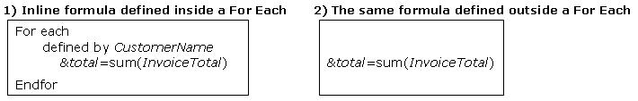

As it was mentioned before when the Inline Formulas were introduced, the fact a formula has a table in its context at evaluation time will affect its result. And its very definition, either. When an inline formula is defined without a contextual table, at the moment the formula is triggered you are not positioned on any table. Consequently, this is only valid for Aggregate Formulas, and in the formula definition you can only include attributes that belong to the desired table to be navigated and its extended table, in addition to variables. What scenarios do not state contextual table?
Given the following transactions:
Customer //transaction name
{CustomerId*
CustomerName}
Invoice //transaction name
{InvoiceId*
InvoiceDate
CustomerId
CustomerName
InvoiceTotal}
In the following examples, note how the same formula has a contextual table and implicit filters when it is defined inside a For Each command; and when it is defined outside a For Each command, it has neither a contextual table nor implicit filters:  In the first example, the For Each base table is: CUSTOMER and as the Sum formula is defined inside the For Each, its contextual table is also CUSTOMER. Even though the Sum formula only involves an attribute that belongs to the INVOICE table (which is the desired table to be navigated by the formula), it could also contain attributes that belong to the CUSTOMER table and its extended table, in addition to variables. Another thing to consider in the first example is that GeneXus determines an implicit filter for the formula, which is: INVOICE.CustomerId = CUSTOMER.CustomerId (because CustomerId is a common attribute between the For Each base table and the table navigated by the formula). So, for each customer navigated by the For Each, its invoices are summarized. Note: as of GeneXus X Evolution 3 you would probably have specified the BaseTrn in the for each (i.e. for each Customer...) In the second example, the same Sum formula was defined, but outside a For Each command. Thus, the formula doesn't have a contextual table, and it can only involve attributes that belong to the desired table to be navigated by the formula and its extended table, in addition to variables. Besides this, the formula won't have implicit filters inferred by GeneXus. So, in this example all the invoices are summarized. Important considerationThe formula is triggered when the group that contains the formula begins. This means that if you have a formula defined in a certain line of the code with its parameters, the parameter values will be those that were read at the moment that the group was executed in the data base. So, if the group was executed in the database, and after that, you have assigned different values to the parameters that you will involve in the formula definition, the parameter values taken into account won't be those that you have assigned; on the contrary, they will be those read when the group that contains the formula was executed in the database. So, when are groups executed?
The same happens with variables. The variable values which are taken into account when the formulas are triggered, are the values that the variables have assigned at the moment that the group that contains the formula is executed. So, if you write the following code: &CustomerId = 1 &total = Sum(InvoiceTotal, CustomerId = &CustomerId) The &CustomerId variable won't have a value at the moment that the formula is triggered. This can be solved as follows: &CustomerId = 1 Do 'CalcTotal' ... Sub 'CalcTotal' &total = Sum(InvoiceTotal, CustomerId = &CustomerId) EndSub In this way, as there is a new beginning of a group (when the subroutine begins) and the formula is included inside the subroutine, when the formula is executed the &CustomerId variable already has the desired value. NoteWhenever you want an isolated evaluation you can also use a procedure to do the calculation. |
| Backlinks | ||
| Examples of Using Formulas | Toc:GeneXus - Table of contents | Inline Formulas |